Khoảng 75 phút từ Hà Nội đến trang của Nhà Đẹp

Đi đến đó
Đến Xuân Mai đã trở nên dễ dàng hơn nhiều kể từ khi tuyến đường sắt trên cao bắt đầu vào giữa năm 2017. Bạn sẽ được di chuyển qua các đường phố đông đúc của Hà Nội mà không bị chậm trễ trên chuyến tàu cao tốc trên cao đầu tiên của thành phố, một chuyến đi ngắn đến Hà ông mất ít hơn 30 phút.
Từ gần lối ra của ga cao tốc bạn có thể bắt xe buýt tiện nghi 30 phút đến trung tâm Xuân Mai, với 27.000 dân. Ngã tư Xuân mai là chợ trung tâm lớn, một nơi tốt để mua sắm rau tươi và bất cứ thứ gì khác bạn muốn để lên trên đường về nhà của bạn, chỉ cách 3 km. Tại một trong những xe taxi sẵn có ở cổng chợ, bạn sẽ vượt qua các đường phố của thị trấn tới một con đường nhựa đường dẫn bạn đi qua những không gian mở rộng của một căn cứ quân sự, nơi các nhân viên y tế của quân đội được huấn luyện, và sau đó đến một khu vực đồi núi tươi tốt Và các thung lũng nơi người Mường đã ngự trị từ nhiều thế kỷ cho đến ngày nay. Tại đây có khoảng 20 gia đình Hà Nội đã có nhà ở.
Đến cổng tường nhà
Căn cứ
Quy mô 3600m2 của khu nhà được bao quanh bởi hàng tre cao vút và hàng rào tường gạch. Những gì cảm nhận đầu tiên khi tới cổng là mùi hương hoa bưởi ngào ngạt . Qua cổng, bạn sẽ tận mắt thấy những hàng nhãn , vải và bưởi , những loại cây cho quả đã được trồng trên 20 năm, và những loại cây có hoa trồng theo mùa tạo cho khu nhà cảnh quan đẹp.
Ngôi nhà của bạn chỉ có thể nhìn thấy được qua lá cây, trước thềm nhà được đóng khung bởi một cái hồ lớn tự tạo . Thềm nhà được trang trí bởi 2 giàn Cát dằng cao lớn rủ hoa thơ mộng. ở phía sau ngôi nhà , Cùng với nhiều cây ăn trái như Xoài, Hồng xiêm và Mãng cầu là 2 cây Sấu cổ thụ nhiều năm tuổi tỏa bóng mát khắp sân. Khu đất của ngôi nhà nằm trong vùng đất thung lũng nông nghiệp màu mỡ , nơi tiếp giáp khoảng cách gần tới đỉnh đồi. Đây là một không gian đặc biệt, rất cá nhân và riêng tư, nó không bị nhìn thấy từ các khu nhà hàng xóm liền kề.
Sự gần gũi này với thiên nhiên và sự phát triển phong phú, trưởng thành là một trong những tài sản độc đáo , hào phóng cho bạn những trải nghiệm thú vị, nó luôn thay đổi khi các mùa chuyển tiếp.
Nhà của bạn
Căn hộ 150m2 của bạn bao gồm hai cấu trúc. Bên phải là một ngôi nhà hiện đại với lối đi bộ qua các cửa sổ thông thoáng ở phía trước và sau lưng, một kiến trúc mở theo phong tục phong thủy , nội thất bằng gỗ bên trong, một sàn ngủ rộng rãi và khu vực tắm với bồn tắm Jacuzzi hiện đại. Phía sau của ngôi nhà mở ra hồ bơi dài 6.7m. Một mái nhà bê tông được thiết kế đặc biệt chứa nước làm cho ngôi nhà này trở thành một thiên đường mát mẻ vào những tháng hè. Được thiết kế bởi kiến trúc sư Phó Đức Tùng ngôi nhà đã được trình bày trên trang bìa và sáu trang nội thất của ấn bản tháng 6 năm 2006 của tạp chí Nhà Đẹp.
Chỉ cách nhà chính một mét là một ngôi nhà gạch cũ hơn được phủ một mái ngói bằng tôn. Bên trong là hai phòng ngủ, lò sưởi và nhà bếp, khu vệ sinh. Đây là một tòa nhà vững chắc, có thể cần một số sửa chữa hoặc là một không gian hoàn hảo cho cuộc sống mộc mạc mà nó đã được dự định ban đầu, hoặc một bức tranh trống để thỏa sức sáng tác căn bếp về những giấc mơ của bạn và nhiều hơn nữa. Nó đã từng là nhà của một người chăm sóc đất, chăn nuôi gia súc và phục vụ chủ nhà.
Cả hai ngôi nhà đã được bỏ trống trong hai năm và nó cần một số công việc để trang hoàng. Đối với những người sẵn sàng đầu tư nâng cấp, đây là một cơ hội hiếm có để trở thành chủ sở hữu của một tài sản đáng chú ý với chi phí rất phải chăng.
Nhà Đẹp biên tập
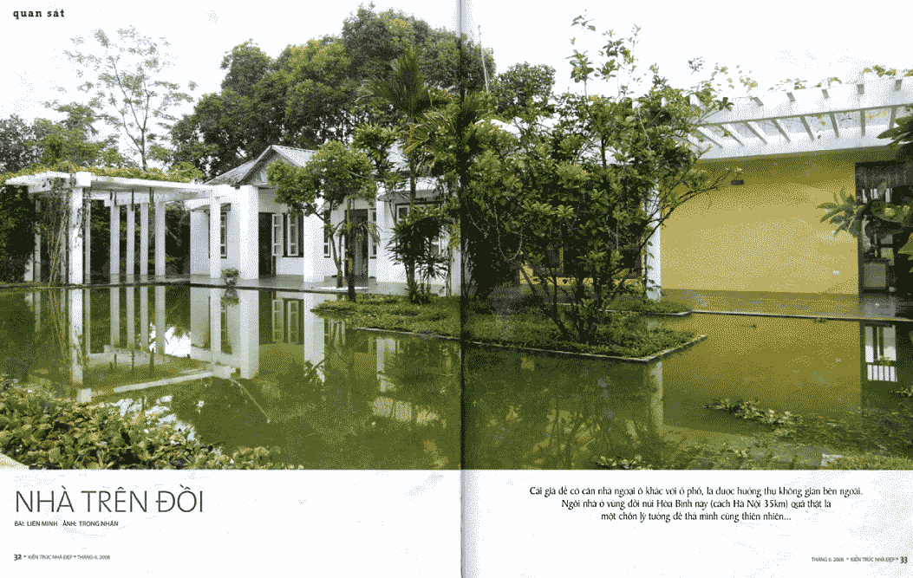 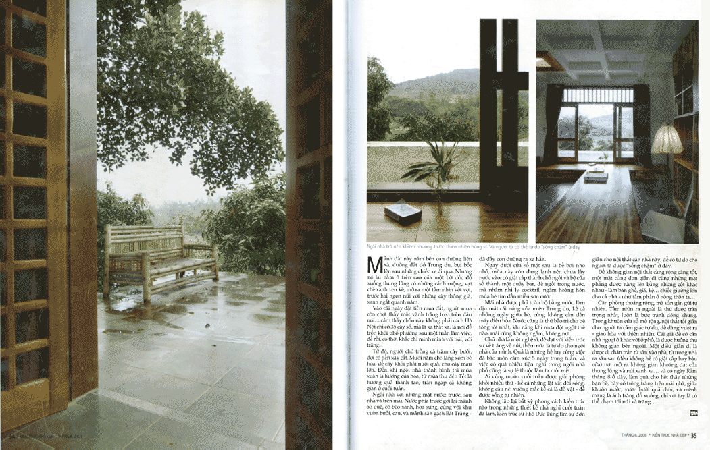 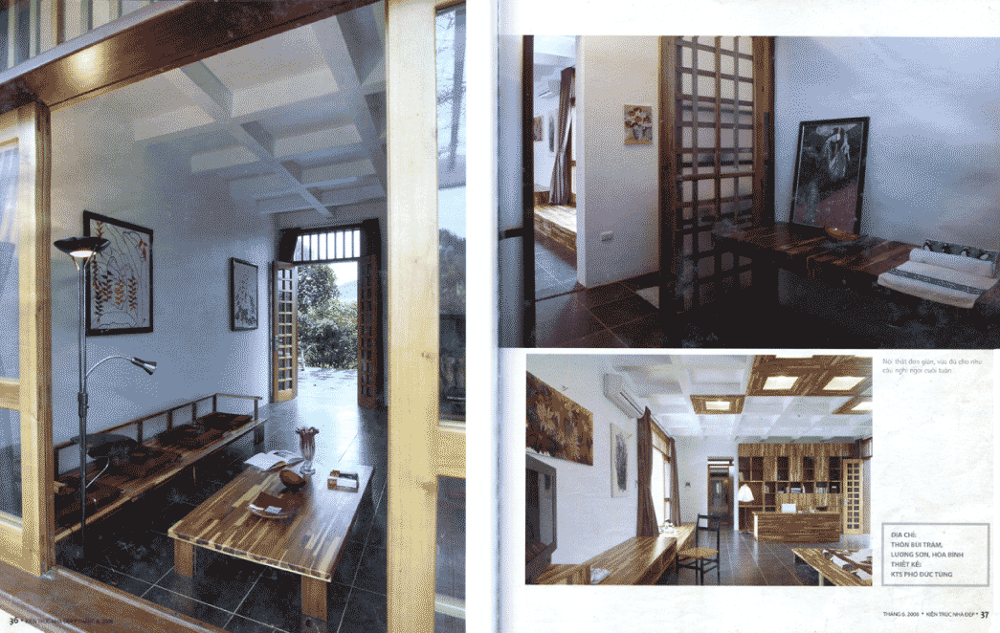Nhiếp ảnh hiện tại
- 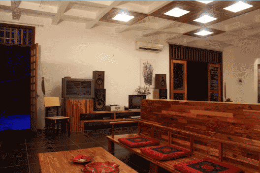
- 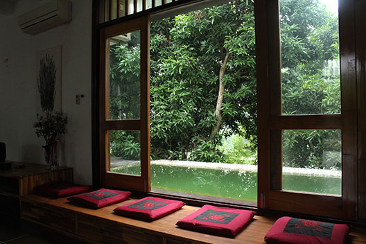
- 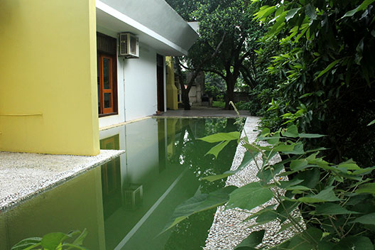
- 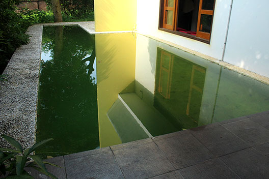
- 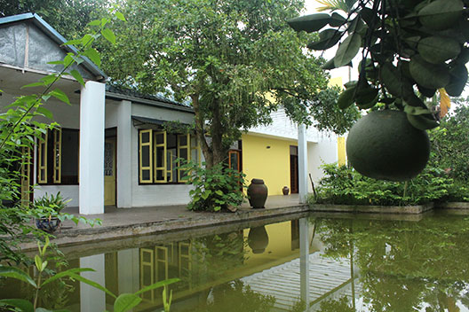
- 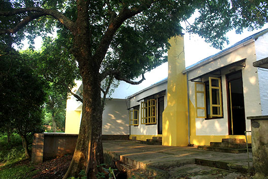
- 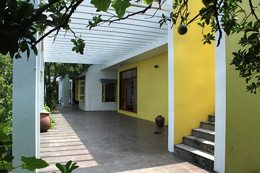
- 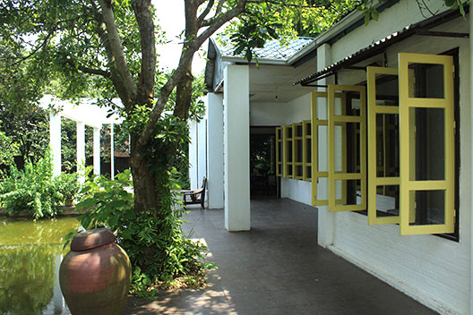